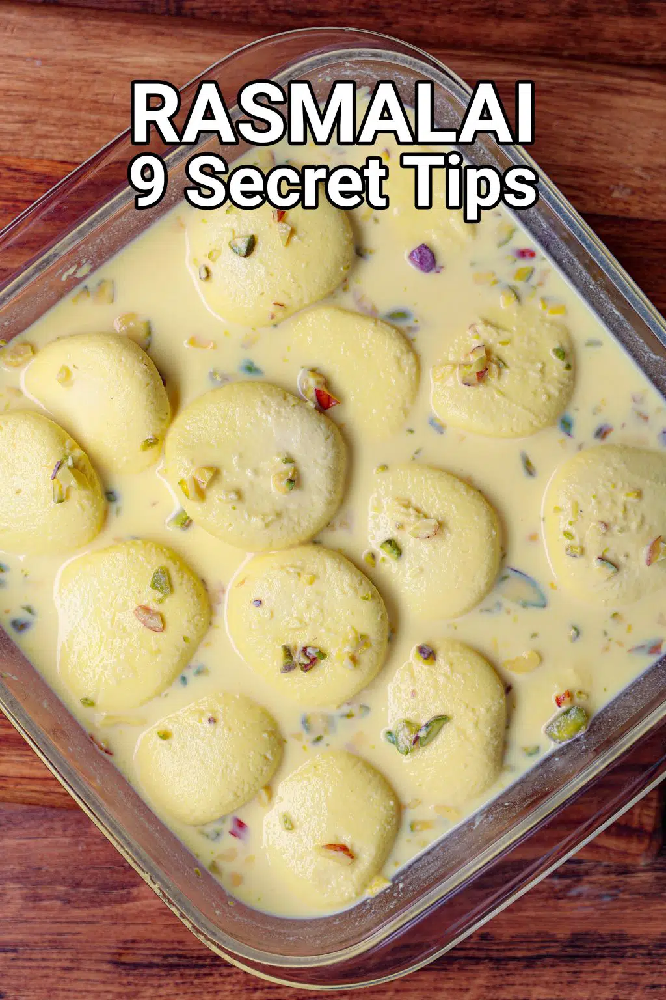

Rasmalai

Description
Rasmalai is yet another one of my favorite sweets. This Bengali specialty is made with rasgulla (sweetened balls of paneer) soaked in sweetened, thickened milk that has been scented with cardamom and saffron. The result is a creamy, dreamy dessert that absolutely melts in your mouth.
Preparation
- To make rasmalai, you will need 12 to 15 rasgulla. You can either make them at home or you can use store bought ones.
- Boil ½ cup water, then add 10 to 12 almonds. Cover and keep aside for 30 to 40 minutes.
- After 30 minutes, peel the almonds and slice them thinly. Set aside.
- While the almonds are blanching, add 1 litre of full fat whole milk in a thick bottomed pan or kadai.
- Bring the milk to a boil on medium heat.
- While the milk is coming to a boil, take 2 tablespoons of warm milk from the pan and add it to a small bowl. Add 8 to 10 saffron strands. Stir and keep aside.
- Once the milk has come to a boil, lower the flame and simmer the milk. Collect the floating cream and push it to the sides of the pan using a spoon or spatula.
- Continue to cook this way till the milk is reduced to half.
- Keep on collecting the cream which floats on the top and move it to the sides. Also keep stirring the milk at intervals so that the milk does not scorch.
- This process of reducing the milk will take about 20 to 25 minutes after the first boil on a low to medium flame.
- Once the milk has reduced to half of its original volume, add 4 to 5 tablespoons of sugar, or as per your taste.
- Stir well so that the sugar dissolves. Scrape the milk solids from the sides and reincorporate them into the simmering milk.
- Add ½ teaspoon green cardamom powder.
- Add most of the sliced almonds (and pistachios if you have used them), reserving a few for garnish.
- Also add the saffron dissolved milk.
- Stir to incorporate. Keep simmering the reduced milk at a low heat and stir occasionally. Check the taste and add more sugar if required.
- Take each rasgulla and gently apply pressure with a spatula so the sugar syrup is removed from it. You can also press and squeeze the rasgulla in your palms.
- Be gentle and don’t apply too much pressure, as the rasgulla will break. There should be no sugar syrup in the rasgulla.
- Press all the rasgulla balls this way.
- Now place the squeezed rasgullas in the simmering milk.
- Simmer for 2 to 3 minutes on low heat. You can omit this step and simply place the rasgulla in the prepared rabdi.
- But they will be more juicy and flavorful if you let them simmer for a couple of minutes.
- Switch off the heat and add 1 to 2 teaspoons of either rose water or kewra water (pandanus water).
- Stir gently. Cover and let the rasmalai come to room temperature, then chill thoroughly in the fridge in a covered bowl or container.
- Serve rasmalai garnished with some sliced almonds or pistachios and saffron strands. You can also serve rasmalai warm or at room temperature if you prefer. Enjoy!